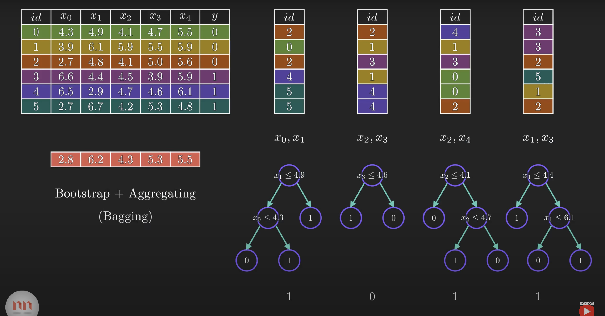
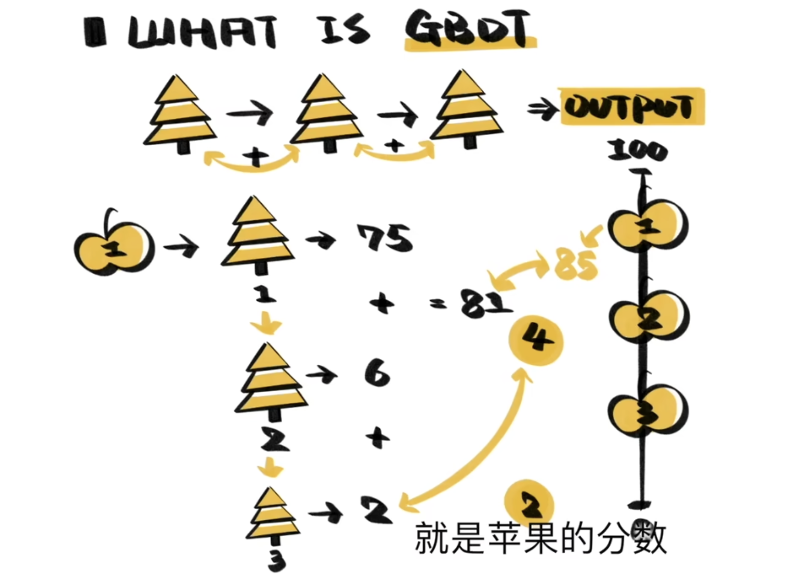

ML面试速成
准备Wiserclub机器学习组的面试，绰绰有余
決策樹
分類
用Entropy或Gini index衡量不確定性（impurity）
- 信息增益適合分類多，每類少 \(\Rightarrow\) ID3
\[ \text{Entropy}=\sum_i-p_i\log(p_i) \]
\[ \max IG = E(parent)-\sum_i w_iE(child_i) \]
越大越好
- 信息增益比 \(\Rightarrow\) C4.5
有時候雖然split沒什麼用，因為他多分出好多小分支，purity雖然上去了，但如果每個值都不同然後你把每個值分成一類，不也沒什麼用
\[ II = -\sum_iw_i\log(w_i) \]
\[ GR = \frac{IG}{II} \]
越大越好
- Gini index適合分類少，每類數量多，優點是計算快 \(\Rightarrow\) CART
\[ Gini(D)=1-\sum_{i=1}^Cp_i^2 \]
越小越好
回歸
用Variance衡量不確定性
\[ \text{Var Reduction} = Var(parent)-\sum_i w_iVar(child_i) \]
隨機森林
決策樹對數據太敏感了

Bootstrap: 穩健，受原始數據集影響小
Feature selection: 減弱樹之間的關聯性（數量最好\(\sqrt n / \log n\)）
GBDT
Gradient Boosting Decision Tree
Boosting: \(A\Rightarrow B\Rightarrow C\Rightarrow \cdots\)
Bagging, Stacking

XGBoost
\[ F=L(\text{Loss function})+\overbrace{\Omega(\text{Regularizer正則項})}^{懲罰葉節點過多} \]
神經網路
卷積 CNN
- 卷積層：提取features
- 池化層：降維（max pooling，average pooling）
- 全連接層
Resnet(2015)引入殘差學習機制
循環 RNN
處理序列，短期记忆
問題：梯度消失
解決梯度消失的方法
用ReLU函數
\[ f(x)=\max (0,x) \]
Alexnet(2012)第一次用ReLU函數
缺點：死亡ReLU \(\Rightarrow\) 改進：Leaky ReLU，PReLU，Swish（谷歌弄的）
LSTM
解決梯度消失，引入門控單元（遺忘、輸入、輸出），GRU（Gated Recurrent Unit）則用重置和更新兩個門
有很多統計模型可以做出預測，但預測效果比較差強人意。而機器學習通常會犧牲可解釋性以獲得強大的預測能力。例如，從線性回歸到神經網絡，盡管解釋性變差，但是預測能力卻大幅提高。
圖 GNN
有圖就可以用GNN
Transformer
RNN \(\rightarrow\) Seq2Seq \(\xrightarrow{意義存儲有限}\) attention \(\xrightarrow{太慢了}\) self-attention
Seq2Seq: encoder \(\Rightarrow\) 意義 \(\Rightarrow\) decoder
self-attention: 提取每個詞的意義再拼起來
BERT
脫胎於Transformer的encoder，把詞語標示為向量
訓練好後，只需要根據任務進行微調，省事
GPT
脫胎於Transformer的decoder
zero shot learning 零樣本學習
每一步輸出都基於上一步輸出的內容，“生成”很厲害
生成對抗 GAN
生成、判別、對抗
互相打架升級
BP算法
back propagation
網絡生成的結果和真實值對比，低了就提高權重，高了就降低權重
很容易過擬合，解決辦法是分出一部分樣本作驗證集，如果訓練集的誤差在\(\downarrow\)，而驗證集的誤差在\(\uparrow\)，說明開始過擬合，及時停止訓練
分類算法
KNN
K-nearest neighbors
分類算法，物以類聚人以群分
選擇K很重要，畫個圈，算歐式距離或曼哈頓距離
支持向量機 SVM
classification margin，support vector
怎麼找中間那條線，就是盡量讓支持向量離margin的距離遠
有交叉：最小化距離
Deep learning出現前最好用的分類算法是隨機森林和SVM
K-means
聚類算法
不需要標籤信息，無監督學習
解釋性好，但準確率不如監督學習，對K值（分成幾類）選擇也敏感